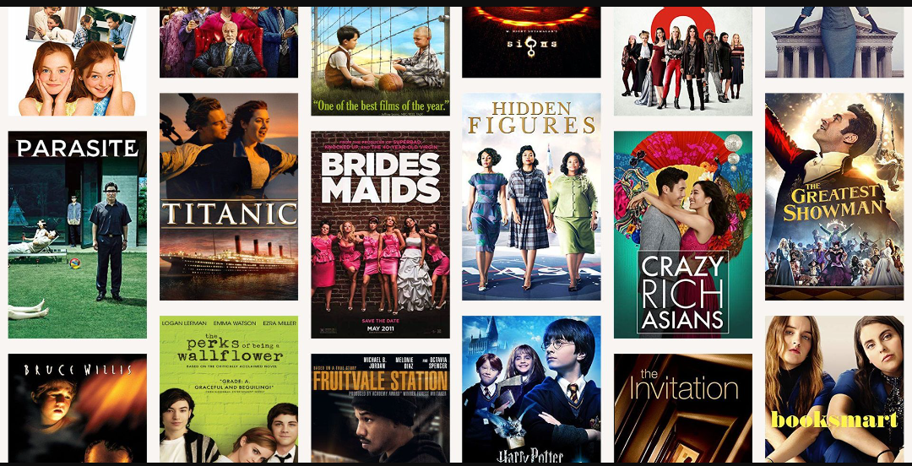
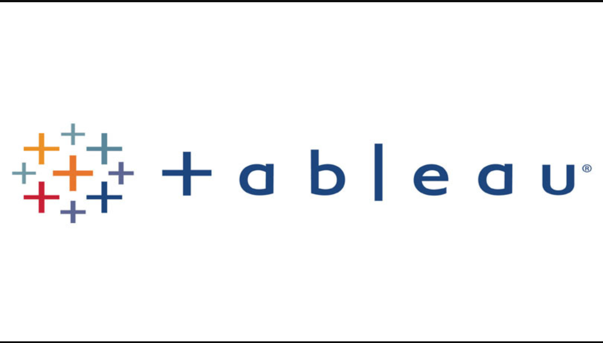

In this project I used R programming language to do analysis of the movielens dataset,
I first started by cleaning the data and reprocessing it to the specific needs of the business tasks.
Later did Exploratory Data Analysis to dive deep into the data and find insightful conclusions from it
by answering different questions in the business task.


In this project, we use raw housing data and transform
it in SQL Server to make it more usable for analysis.

This project involved getting covid-19 dataset into SQL server and exploring the data to find insights.

In this project I used R programming language to do analysis of the uber dataset,
I first started by cleaning the data and reprocessing it to the specific needs of the business tasks.
Did a dive deep into the data to find insightful conclusions from it
by answering different questions in the business task
This was my first project, a case study immediately after finishing Google Data Analytics I first started by cleaning the data and reprocessing it to the specific needs of the business tasks.
professional certification. Bellabeat is a high-tech manufacturer of health-focused products for women.

These are the different dashboards that I have created using Tableau.
From maps, to linking data, using joins and doing guided projects.